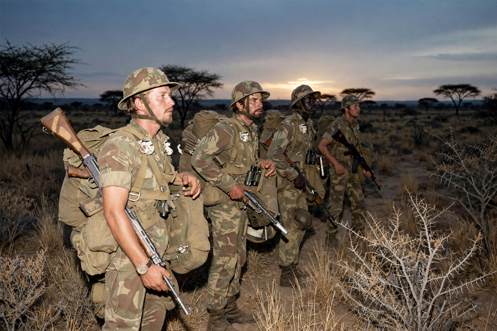

 | |
| Date | 1964/1966–1979 |
|---|---|
| Result | Lancaster House Agreement; Zimbabwe independence |
The Rhodesian Bush War, also known as the Second Chimurenga or Zimbabwe War of Liberation, was a civil war in Rhodesia between the white-minority government of Ian Smith and Black nationalist guerrilla movements ZANLA (of ZANU) and ZIPRA (of ZAPU).
Following Rhodesia's Unilateral Declaration of Independence in 1965, guerrilla incursions escalated after 1972 from bases in Mozambique and Zambia, backed by China and the USSR respectively. Rhodesian forces used Fireforce tactics, Selous Scouts and cross-border raids, but sanctions, manpower strain and loss of South African and Portuguese-Mozambique support made the position untenable.
The 1979 Lancaster House Agreement led to a ceasefire, British-supervised elections in 1980 won by Robert Mugabe, and internationally recognised independence as Zimbabwe.